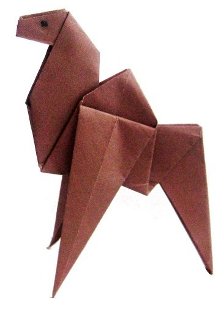
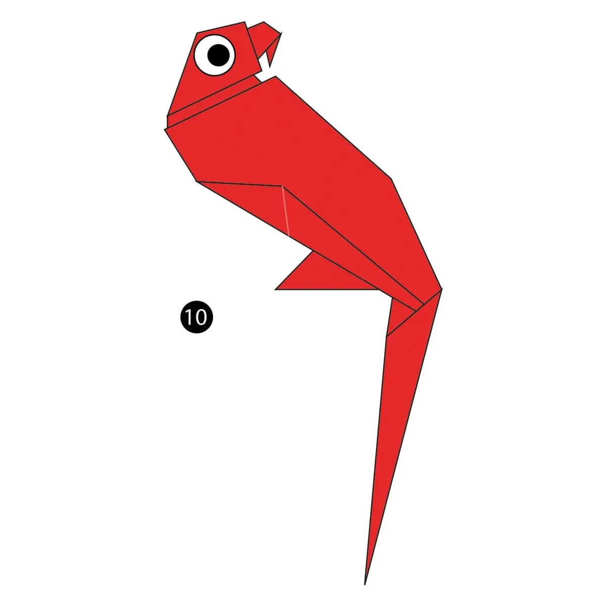

Camel
- Camels are very strong and can carry up to 900 pounds for 25 miles a day
- Camels can travel at up to 40 miles per hour – the same as a racehorse!
- Camels can completely shut their nostrils during sandstorms
Frog
- There are over 5,000 species of frog
- Frogs don’t need to drink water as they absorb it through their skin
- Frogs can live in habitats as diverse as rain forests and deserts
Panda
- They have great camouflage for their environmrnt
- Their eyes are different from normal bears
- They spend a lot of their day eating

Parrot
- Parrots are smart
- Parrots can imitate sounds
- But not all of them can fly

Pegion
- Pigeons are highly sociable animals. They will often be seen in flocks of 20-30 birds
- Pigeons mate for life, and tend to raise two chicks at the same time
- Pigeons are fed by many members of different religions for spiritual reasons

Cicada
- Cicadas are not locusts
- Cicadas have one of the longest insect lifespans
- They can buzz louder than a lawnmower

Chameleon
- Chameleon vary widely in terms of size
- Skin crystals enable them to change color at will
- Unlike many lizards, chameleons can't regrow their tails

Teddy Bear
- The first toy stuffed bear was created by German toymaker Margarete Steiff in 1903
- The Oxford English Dictionary dates the first use of the term teddy bear to 1906
- The world’s largest stitched teddy bear was made in 2008 in America which was 55 foot tall!